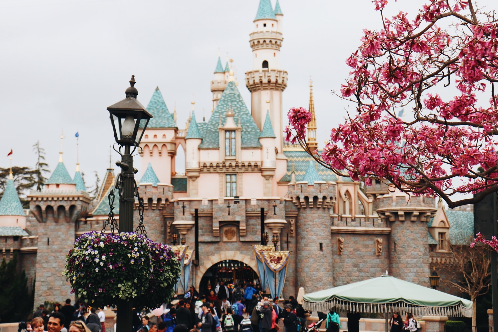
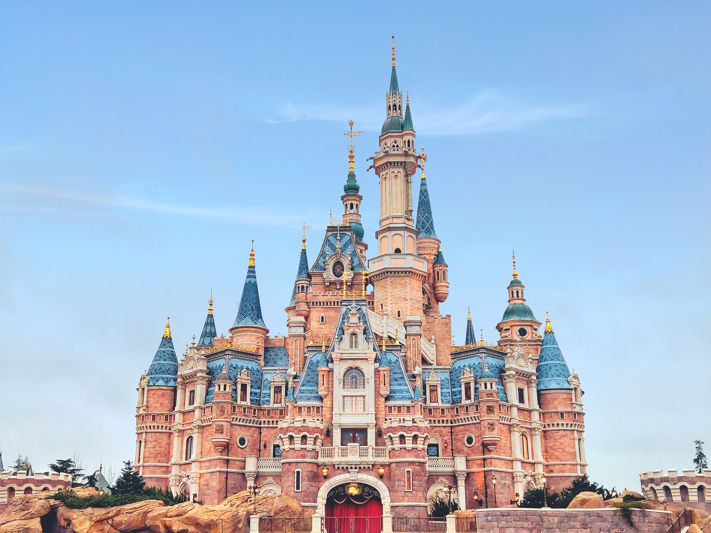
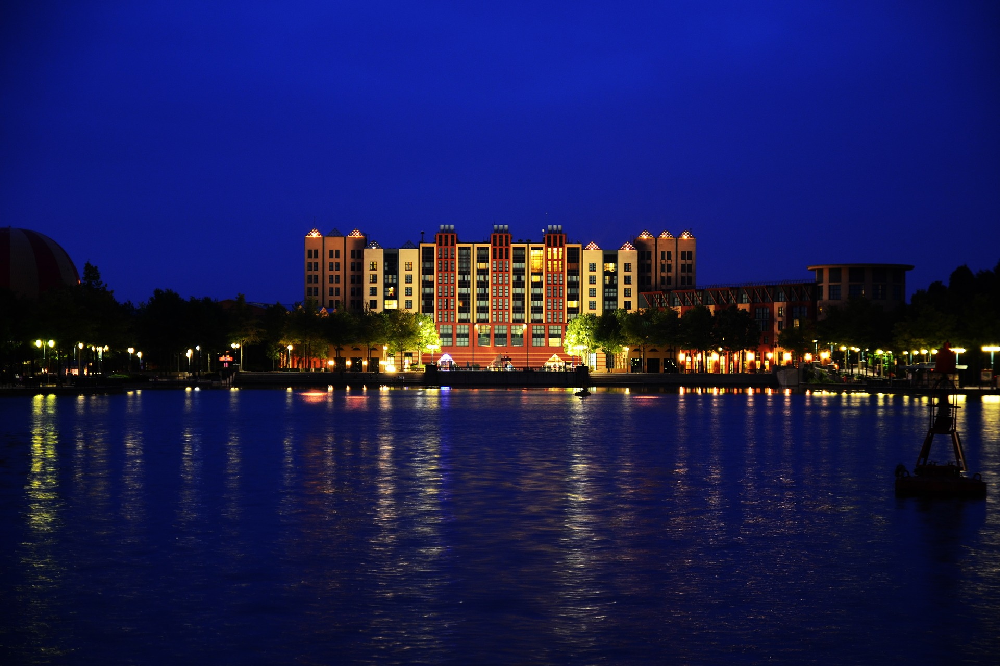
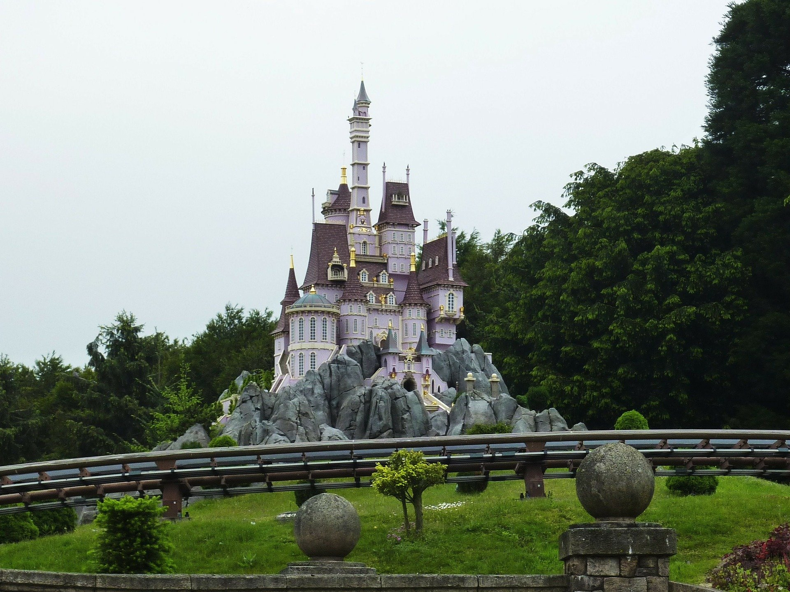
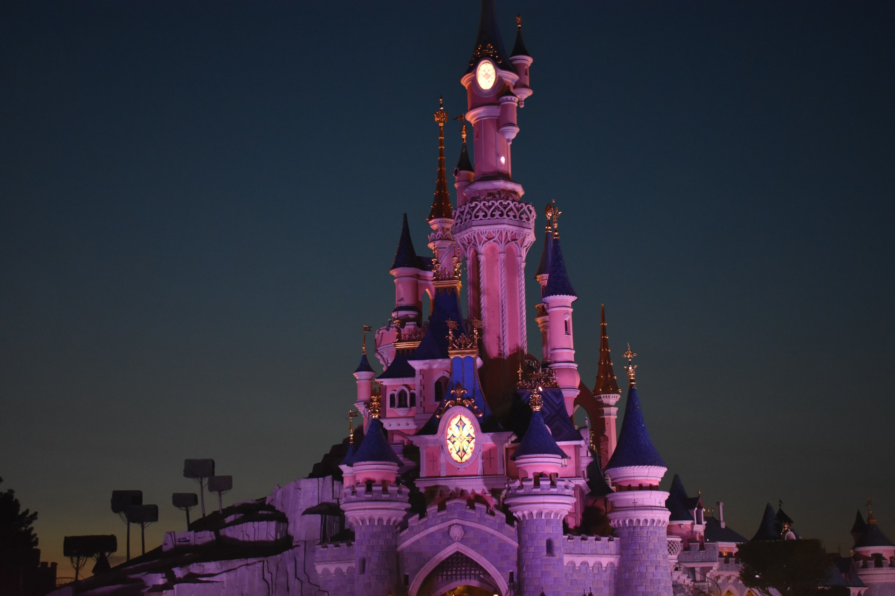
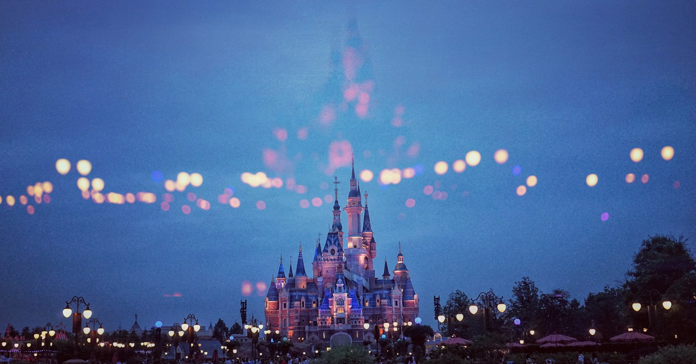
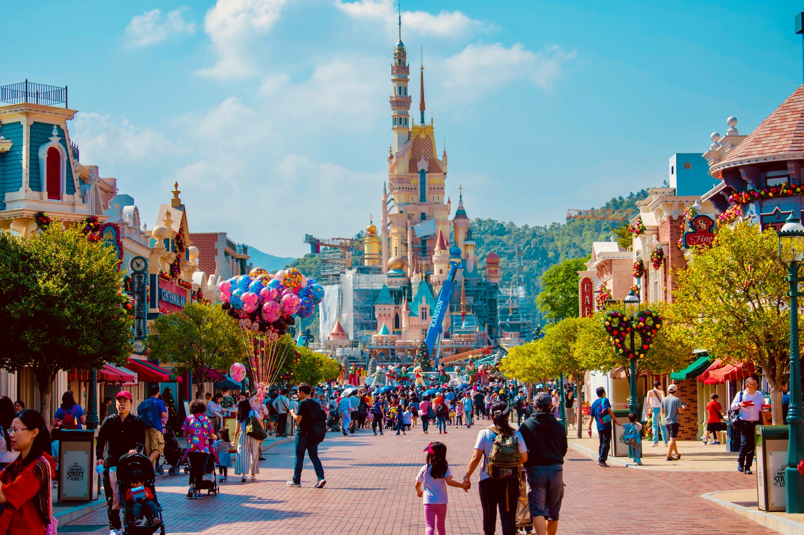
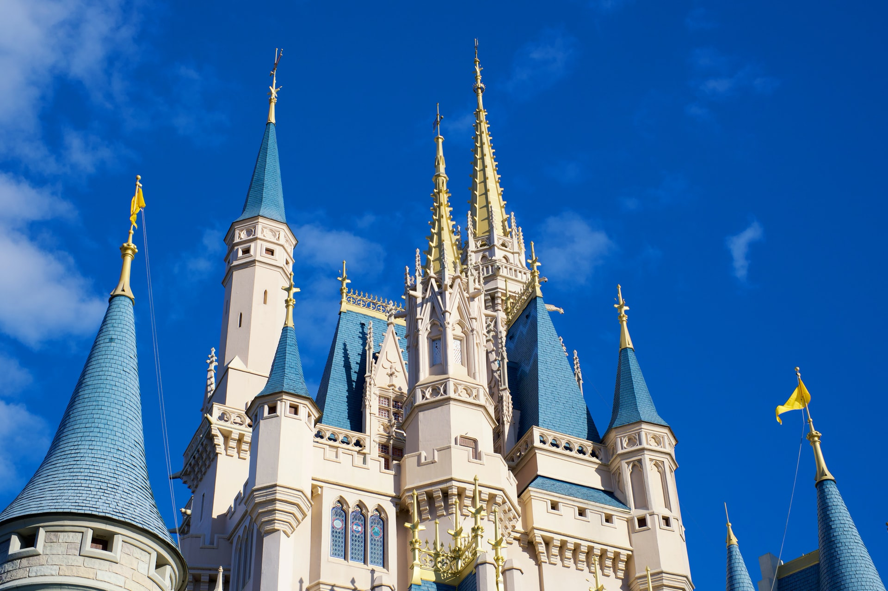

Disneyland, ou officiellement Disneyland Park, est un parc à thèmes situé dans la ville d'Anaheim, en Californie, aux États-Unis. Il est le seul « royaume enchanté » conçu et vu par Walt Disney et a été inauguré le 17 juillet 1955. Il fut construit en un peu plus d'un an par les équipes de Walt Disney Imagineering. Le logo du parc Disneyland n'utilise pas le graphisme associé à l'écriture de Walt Disney. Il utilise une graphie inspirée de la calligraphie des enluminures gothiques. Walt Disney décida de cet usage dès le début du parc, comme peuvent l'attester les premiers billets ou les cartons d'invitation pour la cérémonie d'ouverture. Par association, le logo du complexe utilise aussi ce graphisme sauf pour le logo conçu en 2001 incluant le château, l'ours de Disney California Adventure et le monorail. Il utilise le graphisme scriptural de Disney pour le mot "Disney" mais pas pour le mot "Land" à l'inverse de Disneyland Paris où seul "Paris" n'utilise pas cette graphie. Pour le parc de Disneyland avant 1982, le prix des attractions et d'entrée dans le parc était dissocié.Après un tarif d'admission, les visiteurs devaient se procurer des carnets de tickets contenant 10 coupons de valeurs différentes identifiés par les lettres A à D puis avec le Matterhorn Bobsleds en 1959. Ce lieu accueille plusieurs visiteurs.Ainsi on constate que le nombre de visiteurs passe d’un million en 1955 à 14.200.000 visiteurs en 2014. Un grand nombre de moyens de transports cohabitent au sein du parc à thèmes. Il construisit un chemin de fer miniature avec une locomotive à vapeur dans le jardin de sa propre maison, le Carolwood Pacific Railroad. Toutefois, un grand nombre de moyens de transports différents a été intégré au parc. Le système de transport est, d'une certaine façon, plus une collection d'attractions qu'un réel réseau de transports, bien qu'il sert aussi pour cela.







